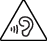

Seuraavat ohjeet on tarkoitettu käyttäjän turvallisuuden takaamiseksi ja laitehäiriöiden estämiseksi. Jos et ole varma, toimiiko laitteesi oikein, tarkistuta se valtuutetulla Sony Mobile -korjauksiin erikoistuneella kumppanilla ennen käyttöä.
Seuraavat ohjeet on tarkoitettu käyttäjän turvallisuuden takaamiseksi ja laitehäiriöiden estämiseksi. Jos et ole varma, toimiiko laitteesi oikein, tarkistuta se valtuutetulla Sony Mobile -korjauksiin erikoistuneella kumppanilla ennen käyttöä.
Seuraavat ohjeet on tarkoitettu käyttäjän turvallisuuden takaamiseksi ja laitehäiriöiden estämiseksi. Jos et ole varma, toimiiko laitteesi oikein, tarkistuta se valtuutetulla Sony Mobile -korjauksiin erikoistuneella kumppanilla ennen käyttöä.
| Älä käytä vaurioitunutta laitetta, esimerkiksi laitetta, jonka näytössä on särö tai jonka takakannessa on paha lommo. Tästä voi aiheutua vammoja tai muita harmeja. Ota yhteyttä valtuutettuun Sony Mobilen korjauskumppaniin vaurioituneen laitteen tarkistamiseksi. |
 Käsittele laitetta huolellisesti. Älä altista sitä äärimmäisen korkeille tai alhaisille lämpötiloille. Älä käytä laitetta alle -10 °C:n (+14 °F) tai yli +45 °C:n (+113 °F) lämpötilassa.
Käsittele laitetta huolellisesti. Älä altista sitä äärimmäisen korkeille tai alhaisille lämpötiloille. Älä käytä laitetta alle -10 °C:n (+14 °F) tai yli +45 °C:n (+113 °F) lämpötilassa.  Älä altista laitetta avotulelle tai sytytetyille tupakkatuotteille.
Älä altista laitetta avotulelle tai sytytetyille tupakkatuotteille. Vain Sony Mobile -korjauksiin erikoistuneet kumppanit voivat tehdä huoltotoimenpiteitä laitteelle. Älä yritä purkaa laitetta.
Vain Sony Mobile -korjauksiin erikoistuneet kumppanit voivat tehdä huoltotoimenpiteitä laitteelle. Älä yritä purkaa laitetta. Sony Mobile välittää asiakkaistaan. Haluamme, että pidät huolta silmistäsi, etkä rasita niitä liikaa. Ystävällinen muistutus: Liiallinen käyttö voi heikentää näköä. Suosittelemme seuraavaa:
Puheluihin ei voi vastata tai niitä ei voi soittaa kaikissa olosuhteissa. Älä koskaan jätä elintärkeitä yhteydenottoja pelkästään mobiililaitteiden varaan. Puhelut eivät ehkä ole mahdollisia kaikilla alueilla, kaikissa matkapuhelinverkoissa tai tiettyjen verkkopalvelujen ja/tai mobiililaitteiden toimintojen ollessa käytössä.
| Jotkin laitteet eivät tue puheluita, hätäpuhelut mukaan lukien. |
 Pidä poissa lasten ulottuvilta. Älä anna lasten leikkiä mobiililaitteilla tai niiden lisälaitteilla. Laitteet voivat vahingoittaa lapsia tai muita lähellä olevia. Laitteet voivat sisältää pieniä osia, jotka irrotessaan saattavat juuttua kurkkuun ja aiheuttaa tukehtumisvaaran.
Pidä poissa lasten ulottuvilta. Älä anna lasten leikkiä mobiililaitteilla tai niiden lisälaitteilla. Laitteet voivat vahingoittaa lapsia tai muita lähellä olevia. Laitteet voivat sisältää pieniä osia, jotka irrotessaan saattavat juuttua kurkkuun ja aiheuttaa tukehtumisvaaran.
Jos käytät muita kuin Sony-tuotemerkillä varustettuja latauslaitteita, saatat vaarantaa käyttöturvallisuuden.
| Älä yritä muuttaa tai muokata USB-kaapelia tai liitintä. Älä pakota liitintä paikalleen, jos se ei sovi pistorasiaan, sillä tämä saattaa aiheuttaa sähköiskun. Pyydä sen sijaan valtuutettua sähköteknikkoa asentamaan asianmukainen pistoke. |
Ladattava akku kestää pitkään, jos sitä käsitellään oikein. Sonyn toimittama akku on standardien IEC62133, IEC61960, GB/T18287-2013 (tuotteet, jotka on julkaistu ennen vuotta 2016), standardin GB31241-2014 (tuotteet, jotka on julkaistu vuonna 2016 tai sen jälkeen) ja standardin GB4943.1 mukainen. Uudet tai käyttämättä olleet akut voivat olla kapasiteetiltaan heikot. Suorituskykyyn vaikuttavat lämpötila, signaalin voimakkuus, käyttötavat, valitut ominaisuudet ja puheen tai tiedon siirto.
Muiden kuin Sonyn akkujen käyttö saattaa lisätä turvallisuusriskejä. Muiden valmistajien akkujen käyttö voi aiheuttaa tulipalon, räjähdyksen, vuodon tai muuta vaaratilanteita.
 Akun EPUP (Environmental Protection Use Period) -suoja kestää 5 vuotta.
Akun EPUP (Environmental Protection Use Period) -suoja kestää 5 vuotta.
 Tämän tuotteen akkulatausjärjestelmä on Kalifornian Energy Commission -viranomaisen sertifioima, kuten BC-logo ilmaisee.
Tämän tuotteen akkulatausjärjestelmä on Kalifornian Energy Commission -viranomaisen sertifioima, kuten BC-logo ilmaisee.
Jos laitteen mukana toimitetaan irrotettava muistikortti, se on yleensä yhteensopiva ostetun laitteen kanssa, mutta ei välttämättä yhteensopiva muiden laitteiden tai niiden muistikorttien ominaisuuksien kanssa. Tarkista yhteensopivuus, ennen kuin ostat tai käytät muita laitteita. Jos laitteessa on mukana muistikortin lukija, tarkista, mitkä muistikortit ovat sen kanssa yhteensopivia, ennen kuin ostat tai käytät niitä.
Muistikortit ovat yleensä valmiiksi alustettuja. Jos haluat alustaa muistikortin uudelleen, käytä tarkoituksenmukaista, yhteensopivaa laitetta. Lisätietoja saat laitteen käyttöohjeista tai ottamalla yhteyttä asianmukaiseen Sony Contact Centeriin.
Älä aseta epäyhteensopivaa SIM-korttia SIM-korttipaikkaan, sillä tämä saattaa vahingoittaa SIM-korttia tai laitetta pysyvästi. Jos SIM-kortin asettaminen laitteeseen edellyttää sovitinta, älä aseta korttia paikalleen suoraan ilman sovitinta.
| Sonyn takuu ei kata yhteensopimattoman tai muunnetun SIM-kortin käytöstä koituvia vahinkoja, eikä se ole vastuussa niistä. |
Muut kuin Sonyn markkinoimat antennilaitteet voivat vaurioittaa mobiililaitetta, heikentää suorituskykyä ja aiheuttaa määritettyjen SAR-tasojen ylittymisen. Älä peitä antennia kädelläsi, sillä se vaikuttaa äänen laatuun ja tehotasoihin. Tällöin puhe- ja valmiusajat lyhenevät.
Sähkölaite saattaa tuottaa kipinöitä. Tämä on kuitenkin harvinaista. Jos lähistölläsi on räjähdysvaara, kipinät voivat aiheuttaa räjähdyksen tai tulipalon, mikä voi johtaa henkilövammaan tai jopa kuolemaan. Räjähdysvaara-alueet on yleensä merkitty selkeästi, mutta tämä ei välttämättä aina toteudu.
Sammuta kaikki sähkölaitteet räjäytysalueella tai alueilla, joilla on annettu kehotus sammuttaa kaksisuuntaisesti toimivat radiolaitteet, jotta laitteet eivät aiheuta häiriöitä räjäytystoimille. Räjähteet räjäytetään työmailla usein kauko-ohjattavilla radiotaajuuslaitteilla.
Lisävarusteet voivat vaikuttaa radiotaajuusenergialle altistumiseen, radiolähetyksen toimintaan, äänenvoimakkuuteeen, sähköturvallisuuteen ja muihin asioihin.
Mobiililaitteet ja radiolähettimillä varustetut laitteet voivat vaikuttaa implantoituihin lääketieteellisiin laitteisiin. Ennen kuin käytät laitetta henkilökohtaisten lääketieteellisten laitteiden läheisyydessä, ota yhteys lääkäriin ja lääketieteellisen laitteen valmistajaan.
Jotkin ajoneuvovalmistajat kieltävät mobiililaitteiden käytön autoissaan, jos sen kanssa ei käytetä ulkoisella antennilla varustettua handsfree-sarjaa.
Joissakin laitteissa on GPS-/paikannustoiminnot. Paikannustoiminnot toimitetaan "sellaisenaan" ja "kaikkine puutteineen". Sony ei anna takuuta tällaisten sijaintitietojen tarkkuudelle.
Laitteen sijaintitietojen käyttö ei toimi välttämättä keskeytyksettä tai virheettömästi, ja se saattaa myös olla riippuvainen verkkoyhteyden saatavuudesta. Huomaa, että toiminnot saattavat heikentyä tai lakata kokonaan toimimasta tietyissä ympäristöissä, kuten sisätiloissa tai rakennusten lähistöllä.
| Älä käytä GPS-toimintoja ajamista haittaavalla tavalla. |
Jos laitteessa on Bluetooth- ja WLAN-ominaisuuksia, ne voidaan ottaa käyttöön lentotilassa mutta niiden käyttö voidaan myös kieltää lentokoneessa tai muilla alueilla, joilla radioliikennettä ei sallita. Pyydä tällöin Bluetooth- tai WLAN-ominaisuuksien käyttöön lupa myös lentotilassa.
Haittaohjelma on ohjelmisto, joka voi vahingoittaa laitetta. Haittaohjelmat tai muut haitalliset sovellukset sisältävät viruksia, matoja, vakoiluohjelmia ja muita epätoivottuja ohjelmia. Vaikka laitteessa on näitä haittoja estäviä suojaustoimintoja, Sony ei takaa, että laite ei vastaanota haittaohjelmia. Voit kuitenkin vähentää haittaohjelmien hyökkäysten riskiä noudattamalla varovaisuutta sisältöä ladatessasi tai sovelluksia hyväksyessäsi, olemalla avaamatta viestejä tuntemattomista lähteistä ja jättämällä vastaamatta niihin, käyttämällä luotettavia Internet-palveluita ja lataamalla sisältöä mobiililaitteeseen ainoastaan tunnetuista ja luotettavista lähteistä.
Poista henkilökohtaiset tiedot ennen laitteen hävittämistä. Voit poistaa tiedot suorittamalla perusnollauksen. Tietojen poistaminen laitteen muistista ei tarkoita, että tietoja ei voida enää palauttaa mitenkään. Sony ei takaa tietojen täydellistä poistamista, eikä vastaa minkään tietojen paljastumisesta, vaikka perusnollaus olisi suoritettu.
 Tämä merkki ilmaisee, että tätä tuotetta, sen komponentteja, osia tai varaosia tai kulutustuotteita ei saa käsitellä talousjätteenä, eikä sitä saa hävittää jäteastiaan jättämällä. Tuotteen omistajia kehotetaan viemään tuote lähimpään sähkö- ja elektroniikkalaitteiden kierrätyksestä huolehtivaan keräyspisteeseen. Tällä tavalla helpotetaan asianmukaista hävittämistä ja autetaan ehkäisemään mahdollisia ympäristölle ja terveydelle kohdistuvia haittavaikutuksia ja vaaroja, joita voi muutoin aiheutua sähköjätteen epäasianmukaisesta käsittelystä, vahingossa tapahtuvasta rikkoutumisesta, vioittumisesta ja/tai virheellisestä kierrätyksestä. Materiaalien kierrätys auttaa säästämään luonnonvaroja.
Tämä merkki ilmaisee, että tätä tuotetta, sen komponentteja, osia tai varaosia tai kulutustuotteita ei saa käsitellä talousjätteenä, eikä sitä saa hävittää jäteastiaan jättämällä. Tuotteen omistajia kehotetaan viemään tuote lähimpään sähkö- ja elektroniikkalaitteiden kierrätyksestä huolehtivaan keräyspisteeseen. Tällä tavalla helpotetaan asianmukaista hävittämistä ja autetaan ehkäisemään mahdollisia ympäristölle ja terveydelle kohdistuvia haittavaikutuksia ja vaaroja, joita voi muutoin aiheutua sähköjätteen epäasianmukaisesta käsittelystä, vahingossa tapahtuvasta rikkoutumisesta, vioittumisesta ja/tai virheellisestä kierrätyksestä. Materiaalien kierrätys auttaa säästämään luonnonvaroja.
Tarkempia tietoja tämän tuotteen kierrättämisestä saa paikallisilta viranomaisilta, paikalliselta jätehuollosta vastaavalta taholta tai myymälästä, josta tuote on hankittu. Voit pyytää ohjeita soittamalla maksuttomaan numeroomme Intiassa.
Maksuton numero: 1800-103-7799
Lisätietoja tuotteen kierrättämisestä on osoitteessa www.sony.co.in.
Tämä tuote ja sen komponentit, osat, varaosat ja kulutustuotteet täyttävät Intian sähkö- ja elektroniikkalaitteita koskevien sääntöjen vaarallisten aineiden rajoituksen vaatimukset. Rajoitettujen aineiden suurin sallittu pitoisuus on 0,1 % painosta homogeenisissa materiaaleissa seuraavien materiaalien osalta: lyijy, elohopea, kuudenarvoinen kromi, polybromibifenyylit (PBB) ja polybromidifenyylieetterit (PBDE). Rajoitettujen aineiden aineiden suurin sallittu pitoisuus on 0,01% painosta homogeenisissa materiaaleissa seuraavien materiaalien osalta: kadmium. Nämä rajoitukset ovat voimassa edellä mainittujen sääntöjen lisäyksen II poikkeusten mukaisesti.
 Tämä sähkölaitteeseen tai sen pakkaukseen lisätty merkki ilmaisee, että sähkölaitetta ja sen akkua ei saa käsitellä talousjätteenä. Laite on sen sijaan luovutettava sopivaan sähkö- ja elektroniikkalaitteiden kierrätyksestä huolehtivaan keräyspisteeseen. Älä yritä poistaa sisäisiä akkuja. Sisäiset akut saa poistaa vain jätehuoltoyritys tai ammattitaitoinen huoltohenkilö.
Tämä sähkölaitteeseen tai sen pakkaukseen lisätty merkki ilmaisee, että sähkölaitetta ja sen akkua ei saa käsitellä talousjätteenä. Laite on sen sijaan luovutettava sopivaan sähkö- ja elektroniikkalaitteiden kierrätyksestä huolehtivaan keräyspisteeseen. Älä yritä poistaa sisäisiä akkuja. Sisäiset akut saa poistaa vain jätehuoltoyritys tai ammattitaitoinen huoltohenkilö.
Tämän laitteen asianmukainen hävittäminen auttaa ehkäisemään mahdollisia ympäristölle ja terveydelle kohdistuvia haittavaikutuksia, joita voi muutoin aiheutua tämän laitteen epäasianmukaisesta jätekäsittelystä. Materiaalien kierrätys säästää luonnonvaroja. Tarkempia tietoja tämän laitteen kierrättämisestä saa paikallisilta viranomaisilta, jätehuollosta, myymälästä, josta tuote on hankittu, tai Sony Contact Centeriltä. Kierrätykseen liittyviä tietoja on saatavilla myös osoitteessa www.sonymobile.com/recycling.
Älä kuuntele suurella äänenvoimakkuudella liian pitkään, sillä tämä saattaa vaurioittaa kuuloasi.
Automaattitarkennus hyödyntää lasertekniikkaa.
Lasersäteily on suunniteltu siten, että sen teho pysyy kaikissa kohtuudella ennakoitavissa olosuhteissa luokan 1 laserturvallisuusrajoitusten puitteissa, mukaan lukien yksittäiset viat, IEC 60825-1:2014:n (kolmas versio) vaatimusten mukaisesti.
Jos katselet 3D-katseluominaisuuksilla varustetulla laitteella otettuja 3D-kuvia 3D-yhteensopivassa näytössä, saatat kokea silmien rasittumista, uupumusta tai pahoinvointia. Suosittelemme säännöllisiä taukoja, jotta vältät tällaiset oireet. Sinun on kuitenkin määritettävä vaatimiesi taukojen pituus ja taajuus itse, sillä vaikutukset vaihtelevat yksilöllisesti. Jos koet olosi millään tavoin epämukavaksi, lopeta 3D-kuvien katselu, kunnes tunnet olosi paremmaksi. Ota tarvittaessa yhteys lääkäriin. Lisätietoja on tämän laitteen yhteydessä käytettävän 3D-laitteen tai 3D-ohjelmiston käyttöohjeissa.
| Lasten näkökyky on vielä kehitysasteella (erityisesti alle 6-vuotiaiden lasten). Pyydä ohjeita lastenlääkäriltä tai silmälääkäriltä, ennen kuin annat lapsesi katsella 3D-kuvia, ja huolehdi siitä, että hän noudattaa edellä kuvattuja varotoimia tällaisia kuvia katsellessaan. |
Voit käyttää TTY-päätettä Sony Mobile -laitteen kanssa. Lisätietoja helppokäyttöominaisuuksista ja -ratkaisuista erityisiä käyttötarpeita edellyttäville käyttäjille on osoitteessa blogs.sonymobile.com/about-us/sustainability/accessibility/overview/. Voit myös ottaa yhteyttä Sony Mobileen numeroon 1-866-766-9374.
 Kun laitetta käytetään laiteoppaissa kuvattujen ehtojen mukaisesti, EPUP (Environmental Protection Use Period) -suoja kestää 10 vuotta.
Kun laitetta käytetään laiteoppaissa kuvattujen ehtojen mukaisesti, EPUP (Environmental Protection Use Period) -suoja kestää 10 vuotta.
| Osan nimi |
Vaaralliset aineet |
|||||
| Lyijy (Pb) |
Elohopea (Hg) |
Kadmium (Cd) |
Kuudenarvoinen kromi (Cr(VI)) |
Polybromatut bifenyylit (PBB) |
Polybromatut difenyylieetterit (PBDE) |
|
| Laite |
X |
0 |
0 |
0 |
0 |
0 |
| Akku |
X |
0 |
0 |
0 |
0 |
0 |
| Lisävarusteet ja laturit |
X |
0 |
0 |
0 |
0 |
0 |
| Tämä lomake on valmisteltu SJ/T 11364:n ehtojen mukaisesti. 0: Ilmaisee, että kyseistä vaarallista ainetta sisältyy ainakin yhteen tässä osassa käytettyyn homogeeniseen materiaaliin ja että sen pitoisuus alittaa säädöksessä GB/T 26572 asetetun rajoitusvaatimuksen. X: Ilmaisee, että kyseistä vaarallista ainetta sisältyy ainakin yhteen tässä osassa käytettyyn homogeeniseen materiaaliin ja että sen pitoisuus ylittää säädöksessä GB/T 26572 asetetun rajoitusvaatimuksen. (Tällä hetkellä saatavilla ei ole vaihtoehtoisia tekniikoita.) |
||||||